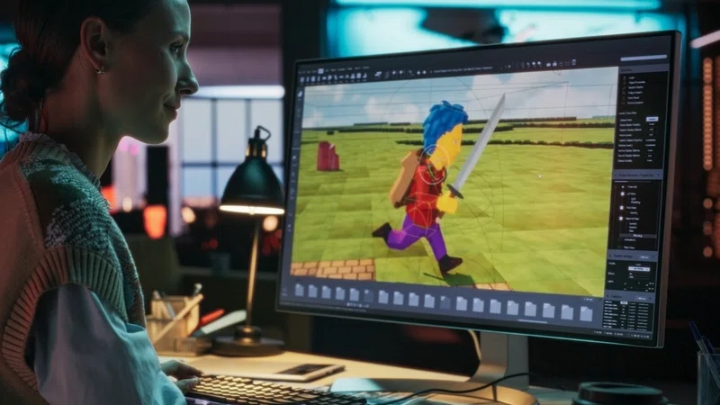
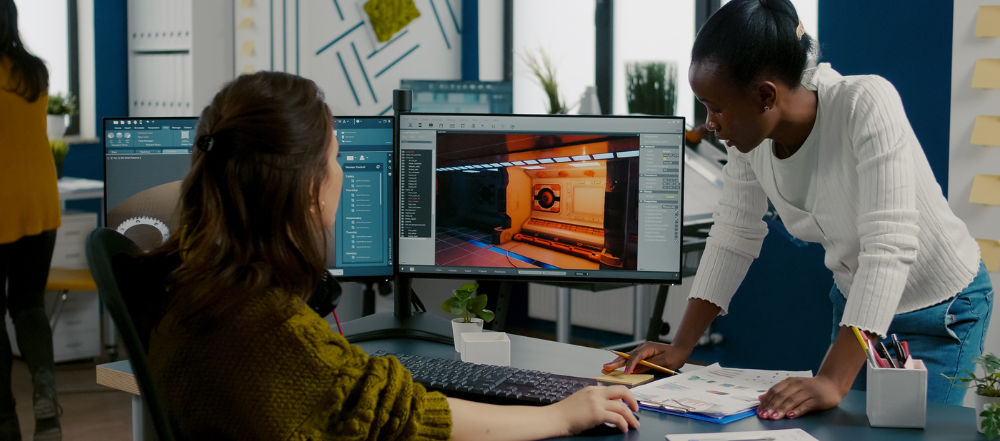
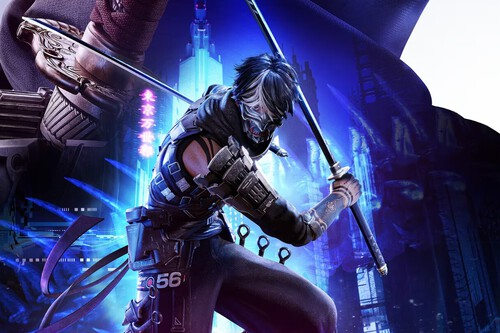
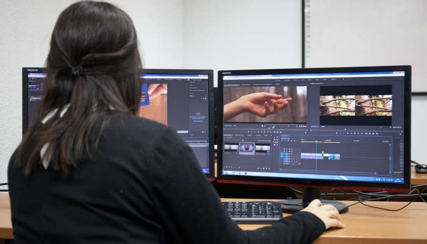

Si puedes imaginarlo, ¡puedes programarlo!

Introducción al Desarrollo de Videojuegos
La creación de videojuegos es un proceso multidisciplinar que transforma una idea inicial en un producto final a través de etapas como la preproducción, producción y postproducción. Las habilidades clave incluyen programación, diseño gráfico, sonido, narrativa y animación. La creación implica un ciclo que va desde la conceptualización hasta el lanzamiento, y hoy en día es posible realizarlo tanto de forma independiente como en equipos grandes.
Etapas del desarrollo de un videojuego
Durante el desarrollo de un videojuego, el equipo encargado de conseguir el éxito del proyecto pasa por diversas etapas que se detallan a continuación:
-
Planificación
 Lo más importante es tener una idea clara del videojuego que se desea desarrollar y contestar preguntas como: ¿Cuándo y dónde tiene lugar la acción? ¿Cuál es el objetivo del juego? ¿Qué personajes participarán? ¿A quién va dirigido? Además, será fundamental planificar el presupuesto, los plazos y los recursos necesarios para su desarrollo.
-
Preproducción
 En esta etapa se da vida a las ideas planteadas durante la planificación.
Se crean prototipos de personajes, entornos y otros elementos del juego
para observar cómo interactúan entre sí. Además, se desarrolla el guion, se diseña la jugabilidad y se establecen las mecánicas básicas del juego.
En esta etapa se da vida a las ideas planteadas durante la planificación.
Se crean prototipos de personajes, entornos y otros elementos del juego
para observar cómo interactúan entre sí. Además, se desarrolla el guion, se diseña la jugabilidad y se establecen las mecánicas básicas del juego.
-
Producción
 Es una de las fases más desafiantes y donde se invierte la mayor parte del tiempo, esfuerzo
y recursos. Durante la producción, los profesionales trabajan hasta alcanzar la llamada
First Playable (FP), una primera versión que define la experiencia inicial del jugador.
Es una de las fases más desafiantes y donde se invierte la mayor parte del tiempo, esfuerzo
y recursos. Durante la producción, los profesionales trabajan hasta alcanzar la llamada
First Playable (FP), una primera versión que define la experiencia inicial del jugador.
-
Pruebas
 En esta etapa, los testers evalúan cada característica y mecánica del juego para asegurarse
de que cumpla con los estándares de calidad. Existen dos tipos principales:
las pruebas Alpha, centradas en la jugabilidad, y las pruebas Beta,
realizadas al final del desarrollo por un equipo externo para detectar errores o bugs.
En esta etapa, los testers evalúan cada característica y mecánica del juego para asegurarse
de que cumpla con los estándares de calidad. Existen dos tipos principales:
las pruebas Alpha, centradas en la jugabilidad, y las pruebas Beta,
realizadas al final del desarrollo por un equipo externo para detectar errores o bugs.
-
Prelanzamiento
 Antes del lanzamiento oficial, se aplican estrategias de marketing para dar a conocer el videojuego.
Una práctica común es ofrecer copias de acceso temprano a streamers y creadores de contenido,
generando interés y expectativas entre los jugadores.
Antes del lanzamiento oficial, se aplican estrategias de marketing para dar a conocer el videojuego.
Una práctica común es ofrecer copias de acceso temprano a streamers y creadores de contenido,
generando interés y expectativas entre los jugadores.
-
Lanzamiento
 Después de años de desarrollo y pruebas, llega el momento más esperado: el lanzamiento. En la fecha programada, el videojuego se lanza al mercado, tanto en plataformas digitales como en tiendas físicas especializadas.
-
Posproducción
 En esta última fase, el equipo recopila opiniones de los usuarios y comentarios en redes sociales o foros especializados para corregir errores, lanzar actualizaciones y mejorar la experiencia del jugador.